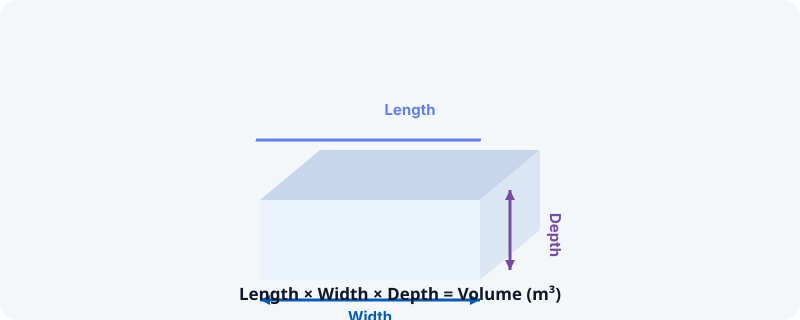

How much concrete do I need? A homeowner's guide
Ordering too little concrete means a delayed, patchy pour. Ordering too much wastes money on a perishable material you can't return. The good news is the maths behind it is simple once you know the three numbers that matter: length, width and depth.
Step 1: work out the volume
Concrete is sold and mixed by volume, not weight, so the first job is always to convert your project into cubic metres. For a simple slab or path, multiply length × width × depth (all in metres) to get cubic metres directly. For a cylindrical post hole, use the radius rather than a straight width — the shape changes the formula, not just the numbers you plug in.
It's worth adding a small buffer — typically 5–10% — to your final figure. Ground is rarely perfectly level, formwork isn't perfectly sealed, and running short mid-pour is a far bigger problem than having a little extra.

Step 2: choose your mix ratio
A concrete mix is described as a ratio of cement to sand to aggregate (stone) — a common general-purpose ratio is 1:2:3 (one part cement, two parts sand, three parts aggregate), while foundations and load-bearing work often use a stronger 1:1.5:2.5 or 1:2:4 depending on the application. Stronger mixes use proportionally more cement, which is also the most expensive ingredient — so the right ratio for the job matters for both durability and cost.
Volume first, ratio second, bags last — get the order wrong and you'll be recalculating halfway through a pour.
Step 3: convert to materials or bags
Once you know your total volume and chosen ratio, that volume splits into the weights of cement, sand and aggregate needed, which you can then convert into bag counts based on the bag sizes your merchant sells. If you're using pre-mixed bagged concrete instead of mixing your own from raw materials, manufacturers usually state a yield per bag (how many cubic metres one bag produces) — divide your total volume by that yield to get a bag count directly, no ratio maths required.
Common project sizes
A typical garden shed base, garage floor, fence post hole and patio slab all use wildly different volumes — a post hole might need a fraction of a bag, while a garage floor can run to several tonnes of material. This is exactly why working from your own measurements beats guessing from a "typical" figure: two sheds of slightly different footprints can need noticeably different amounts.
A quick note
Mix ratios and yields vary by product and application — always check the manufacturer's guidance or consult a builder for structural or load-bearing work. This guide covers general principles, not a substitute for professional advice. See our full disclaimer.